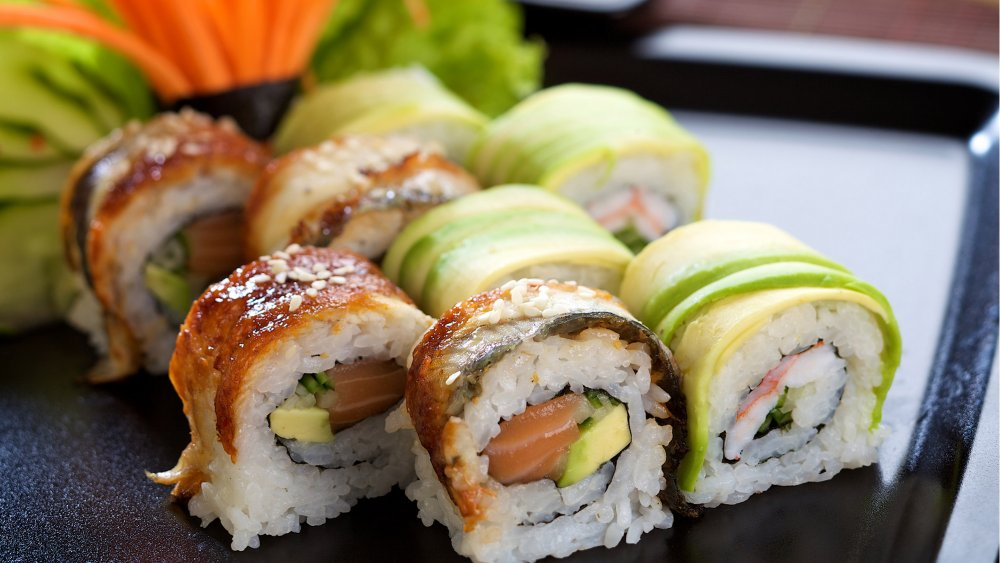

Cookpad - Que la cuisine rime avec plaisir! En cette période particulière de confinement, toute l’équipe de la DENM pense à vous et à vos proches. Pensez aux autres, restez chez vous et surtout prenez soin de vous.
Machines à Café Inissia | Nespresso Je peux stocker et organiser mes recettes, mes commentaires, créer des menus, etc. Aller sur mon carnet. Nouveautés. Anniversaire d'enfant : notre sélection pour une belle table de fête Notre sélection des meilleures cuisinières pour enfants. Suivez-nous. Suivez-nous sur les réseaux sociaux !
LES MEILLEURES RECETTES DE GATEAU Découvrez la Gamme de Machines à Café Inissia par Nespresso, la plus petite et colorée des Machines Nespresso avec toujours ce goût exceptionnel de café.
Recettes de cuisine | 750g De 4/6 à 36 mois, des gammes adaptées aux besoins spécifiques de bébé ! Des produits, conseils et des Recettes pour bébé !
Gateau : nos délicieuses recettes de gateau Bouillon Concentré Recettes. Trouvez votre idéal de saveur avec le bouillon concentré Campbell’s! Nos bouillons concentrés sont jusqu’à quatre fois plus concentrés que nos bouillons prêts à utiliser.
Recettes de cocktails et boissons Soif de recettes ? On se donne rendez-vous dans votre boîte mail ! Découvrir nos newsletters. Retrouvez Marmiton où que vous soyez en téléchargeant l'application. Concocté avec ♥ par Marmiton. Tous droits réservés Marmiton.org - 1999-2021.
Cadastre de l'Emploi Non Marchand - Cadastre de l'emploi non marchand
2021.04.13 13:09

Aller au contenu principal Toggle navigation Menu
Cadastre de l emploi non marchand
Application SICE Collectes des données pour le cadastre de l emploi Calendrier des collectes Guide de l utilisateur et instructions générales Problème d affichage de l application sur votre écran ? Didacticiels d aide à l encodage SICE (téléchargeables) Foire Aux Questions Questions générales relatives à l encodage dans SICE quelle que soit la collecte Questions relatives à la collecte statistique (1er semestre de l année) Questions relatives à la collecte de justification des subventions (2nd semestre de l année) Documentation, contacts et liens utiles Documentation légale relative au cadastre de l emploi non marchand Qu est ce que le cadastre de l emploi ? Quelques définitions Quelques chiffres sur l emploi dans le secteur non marchand Liens utiles et contacts Liens utiles Contacter la DENM - Helpdesk Contacter les agents qui gèrent votre dossier
Cadastre de l Emploi Non Marchand
Ce site est à destination des employeurs du non marchand en FWB (hors enseignement)
Ce site est à destination des employeurs du non marchand en FWB (hors enseignement)
En cette période particulière de confinement, toute l’équipe de la DENM pense à vous et à vos proches. Pensez aux autres, restez chez vous et surtout prenez soin de vous. Courage à toutes et à tous.
Contactez-nous
Cadastre de l emploi non marchand Boulevard Léopold II, 44 1080 Bruxelles
02/413.34.96
cadastre.emploi(at)cfwb.be
Déclaration d accessibilité
Enseignement.be Culture.be Sport-adeps.be Aidealajeunesse.be Recherchescientifique.be Maisonsdejustice.be Plus d info sur la FW-B À propos de la FW-B Contacter la FW-B Mentions légales Vie privée Une question ? 0800 20 000 Appel gratuit les jours ouvrables de 8h à 18h Les sites de la Fédération sont réalisés avec le support de l' ETNIC